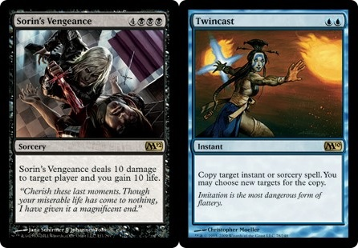

I was laying on my lounge for New Years Eve 2018 (boring i know hey?).
It wasn’t that bad, I was watching my favourite MTG Streamer playing Sorin’s Vengeance + Twincast, a beautiful… if not infuriating combination of magic cards.

I had realised I had gone through 2018 without terribly many technical achievements in work and life. Sure, I had learned an amazing amount from my wonderful colleagues like Farooq, Nina, and Stefano. But it seemed like for that time period, I’d just gained an extra notch on my LinkedIn profile. I didn’t have much to show for all the amazing things I had learned and studied throughout the year.
Cool Guys Inc
I’ve been part of a slack server for a few years. One of my close friends decided to leave facebook and asked all of us to join his slack server. It’s been a good mix of dev and security chat, cooking discussions, and pokemon memes.
All of which would probably make for good blog topics, so I figured, hey, maybe I should give that a go. I also kind of wanted to deal with a few other little things:
- Buying my personal domain before some arsehat takes it
- More opportunities to work on my technical and personal writing skills again
- Keep a non-git repository of awesome resources and things I’m learning/doing/have done.
- A portfolio to show for future work opportunities
So, I spoke with my friends at Cool Guys Inc and they all said go for it!
Where to start?
First thing I went about was reviewing what my other colleagues had experience with, what the industry was trending towards, and what I’d be most comfortable using.
My friend Stefano was writing Blog Posts on LinkedIn (they’re really good!) and noticed he wasn’t getting as much traction as he liked. So decided early on that it probably wasn’t the platform for me. I feel i would have my posts get lost in the cacophony of voices marketing jobs and random InfoSec products/services/training.
So figured, maybe another managed service would be a good idea? Medium seemed to be the next option, but I felt that it was too constrained to being a blogging platform exclusively and I wouldn’t have the ability to do customisation as I would have liked. Ditto on the noise factor.
I investigated Ghost as I came across an article by Troy Hunt that talked about how great he found the platform to be. The issue is that I wanted to avoid paying for anything initially, in fact if i could avoid paying at all that would be best. And I’m not the best Infrastructure expert, I’d rather not have to manage my own server and deal with patching and certificates and such if possible.
What’s left?
So I went back to watching magic streams for a little while and learning about golang, my new pet language. I watched this amazing talk by Rob Pike one of the language designers of golang, and something just twigged in me.
The golang designers picked three absolutely critical principles that they stuck by when designing the language, why shouldn’t I do the same?
Following the Principles
I came up with the following set of principles
Free: My website needs to absorb as little money AND time from me for maintenance as possible, so I can focus on learning, writing, and personal projects.
Modern: My website needs to be accessible, clean, and easily to use. My users expect modern blog platform features, integration with socials, and responsive design.
Secure: My website needs to be secure. If I am preaching security, and not actively securing my website, then I have no grounds to talk about it.
Given these principles it became a lot clearer what met my needs. Here are a few cliff-notes that i took in Sublime while researching my options.
- Wordpress
- Could host myself, but that’ll eat time and money. Known to be bad at security. Little dated.
- Tumblr
- Can’t post sexy pics of myself on this. :( Also I doubt my audience would be using Tumblr, or that I would be taken seriously if I used it.
- LinkedIn
- Sites got my audience, but nobody will find posts without sifting through the garbage. Limited control over my own direction.
- Jekyll
- Static Site so definitely more secure, no infra since hosted in GitHub Pages, Sleek, uses Ruby for generation though so bleh.
- Gatsby
- Static like Jekyll, seems very feature-rich. I don’t need a billion features, and more features adds bloat. I’m not great at React.
- Hugo
- Static, can host on github, written in golang. Seems well-supported, is very fast.
- Medium
- Definitely the mature blogging platform, but definitely purpose built for blogging, and I’d like to have a little more control. Also, same issue with LinkedIn, noise is common.
- Ghost
- Cost in time and $$$ for management. Investigated it a bit, its nodeJS so super fast, but not quite what I’m looking for.
The winner is HUGO
I pretty much narrowed it down to ONLY static site generators, and from there Hugo was easily better for my purposes than Jekyll as I’m used to the go syntax over Ruby, and know that golang is far better performance-wise than Ruby is.
Anyway, I think that’s enough for my first blog post. In my next one I’ll talk about some of the reasons behind theming, social media choices, website language, etc.
Thank you for reading!